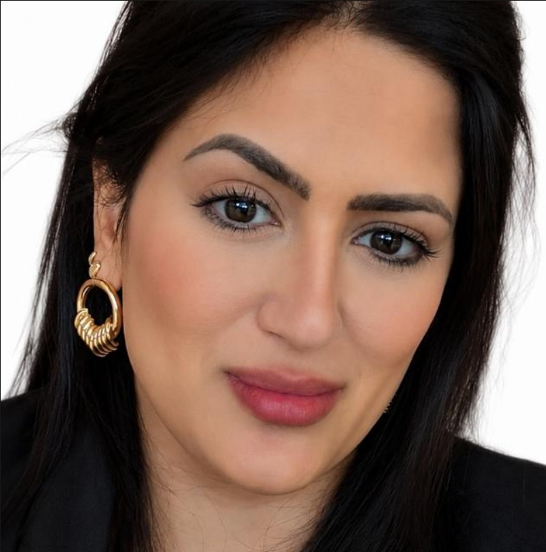

Teleconsulta e teleorientação
Consulta por vídeo em plataforma segura, com registro em prontuário eletrônico e documentos digitais quando clinicamente indicados.
Telemedicina · Ambulatório · Atenção Primária
Médica — CRM-MS 16563 · com visto para atuar no Estado de São Paulo
Cuidado clínico com escuta qualificada, condutas baseadas em evidências e atendimento humanizado. Teleconsulta para pacientes em todo o Brasil e atendimento presencial em Mato Grosso do Sul e São Paulo.

Sobre
Atuação em Atenção Primária à Saúde, ambulatório e Saúde Digital, com prática consolidada em telemedicina e teleconsulta — sempre com foco em resolutividade, escuta qualificada e atendimento humanizado.
A telemedicina eliminou a distância como barreira: hoje atendo pacientes de qualquer cidade do país, com a mesma qualidade clínica e o mesmo rigor documental do consultório. Domínio de prontuário eletrônico e organização do fluxo de pacientes em ambiente ambulatorial e remoto, somados à segurança clínica construída na assistência em pronto atendimento e urgência.
Atendimento
Atendimento clínico com olhar integral — do acompanhamento de rotina ao encaminhamento seguro quando a situação exige avaliação especializada.
Consulta por vídeo em plataforma segura, com registro em prontuário eletrônico e documentos digitais quando clinicamente indicados.
Acompanhamento ao longo do tempo, orientação preventiva e coordenação do cuidado entre diferentes serviços de saúde.
Seguimento clínico de quadros como hipertensão, diabetes e dislipidemias, com revisão periódica de exames e medicações.
Avaliação de sintomas comuns — quadros respiratórios, dores, alergias e queixas de ouvido, nariz e garganta — com conduta e orientação claras.
Acompanhamento clínico infantil e queixas agudas, com habilidade desenvolvida no cuidado da criança e em quadros alérgicos.
Escuta de queixas emocionais, avaliação inicial e articulação com o cuidado especializado quando necessário.
Atuação em medicina geral, com registro ativo sob o CRM-MS 16563. As áreas citadas refletem formação e experiência assistencial e não constituem anúncio de título de especialista — não há Registro de Qualificação de Especialista (RQE) vinculado a esse registro.
Consulta online
Não importa a cidade ou o estado: a teleconsulta acontece na plataforma própria da Dra. Laís — agendamento, sala de vídeo e prontuário no mesmo ambiente, sem intermediários e sem criar conta em serviço de terceiros.
A agenda é aberta em tempo real, nos horários no seu fuso. Você informa nome, e-mail e telefone — sem senha para criar.
Na hora do agendamento chega a confirmação; cerca de uma hora antes da consulta, o link de acesso à sala.
Basta um celular ou computador com câmera e internet. A sala abre 15 minutos antes do horário marcado.
Urgência e emergência: a teleconsulta não substitui o atendimento presencial em situações de urgência ou emergência. Em casos graves, procure o serviço de saúde mais próximo ou ligue 192 (SAMU).
Como funciona a telemedicina: o atendimento segue a Lei nº 14.510/2022 e a Resolução CFM nº 2.314/2022. A modalidade é uma escolha livre do paciente e da médica; havendo necessidade de exame físico ou de avaliação presencial, o atendimento remoto é interrompido e você é orientado(a) sobre o encaminhamento adequado.
Seus dados: o agendamento e a videochamada ocorrem na plataforma própria da Dra. Laís, sob responsabilidade dela e com tratamento de dados conforme a LGPD. A sala de vídeo é privada, criptografada e não é gravada — o registro clínico só é apoiado por assistente de anotação mediante seu consentimento expresso, pedido dentro da própria consulta. Saiba mais na Política de Privacidade.
Trajetória
Base sólida em medicina geral, construída entre a urgência, o ambulatório e o cuidado continuado — e hoje aplicada também ao atendimento remoto.
Consulta ambulatorial, demanda espontânea e acompanhamento clínico longitudinal em Unidades Básicas de Saúde — prevenção, rastreamento e manejo de condições crônicas.
Policlínica Cidade de Andradina e unidades de pronto atendimento na capital e Região Metropolitana (UPAs de Mogi das Cruzes, Jundiapeba e Ipiranga), com foco em agilidade e precisão diagnóstica.
Remoções e transferências inter-hospitalares de média complexidade, com estabilização clínica e acompanhamento do paciente durante todo o transporte.
Campos em que desenvolveu prática clínica ao longo da formação médica, acompanhada por profissionais experientes. Ampliam o repertório da consulta em medicina geral — sem constituir título de especialista.
Prática desenvolvida em saúde digital e teleconsulta na Clínica Ruiiz — São Paulo/SP, com acompanhamento do Dr. Augusto Ruiz Ponce do Amaral (CRM-SP 272771).
Vivência clínica em ambulatórios de Três Lagoas/MS, com a Dra. Bianca Vilela J. Mendes Goulart (CRM-MS 11343), e de Cubatão/SP, com a Dra. Annelize Martins Letrinta (CRM-SP 252885).
Vivência clínica e cirúrgica em Três Lagoas/MS, com acompanhamento do Dr. Lucas Lara Hahmed (CRM-MS 7911 / RQE 4433).
União das Faculdades dos Grandes Lagos (UNILAGO) — São José do Rio Preto/SP. Registro profissional ativo: CRM-MS 16563, com visto para atuar no Estado de São Paulo.
Documentação comprobatória disponível mediante solicitação.
Contato
Teleconsulta para pacientes de todo o Brasil. Atendimento ambulatorial e presencial em Mato Grosso do Sul e São Paulo.
A teleconsulta é marcada online, na plataforma da própria médica — leva menos de um minuto.